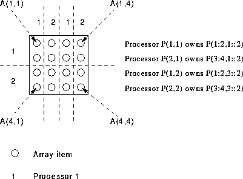

2D distribution is simple. The example has BLOCK distribution in the first dimension (traversing the rows) and CYCLIC in the second dimension (traversing the columns).
PROGRAM Skwiffy
IMPLICIT NONE
REAL, DIMENSION(4,4) :: A, B, C
!HPF$ PROCESSORS, DIMENSION(2,2) :: P
!HPF$ DISTRIBUTE (BLOCK,CYCLIC) ONTO P :: A, B, C
B = 1; C = 1; A = B + C
END PROGRAM Skwiffy
Thusly, the first dimension is partitioned into equal sized blocks and the second dimension is divided up in a round robin fashion. It transpires that (see Figure 20:

Figure 20: Visualisation of 2D Distribution